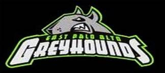

 |
3rd Annual
Youth Sectional
Saturday, Mar 28, 2009 Gunn High School 780 Arastradero Rd. Palo Alto, CA 94306 |
Starting Time – The field
events and first running event both start at 9:00 a.m.
Packet Pick-up – begins
at 7:30 a.m.
Coaches Meeting – begins
at 8:30 a.m. to go over meet rules and day of meet scratches.
Snack Bar
There will be a snack bar with breakfast
and lunch items available for purchase.
Number of Events – Sub-bantams,
Bantams, and Midgets may participate in three events. Youth and
Open may participate in four events.
Entries
Deadline: March 24th – Entries must be sent via Club Manager to sylvia.j@sbcglobal.net.
Fees - $6.00 per athlete before
deadline or $10.00 per athlete after deadline.
Payment Information – All payments must be:
- Certified Check or Money Order only
- Made payable to: East Palo Alto Greyhounds
- Sent to: East Palo Alto Greyhounds 2009 Track Meet,
2120 Oakwood Dr.
East
Palo Alto, CA 94303
Sylvia Jones650-324-3929 |
Eric Stuart510-812-6703 |
Order of Events
Age Division Birth Year
Sub-
Bantam 1999 to 2000
Midget
Open
Starting Time – The field
events and first running event both start at 9:00 am
- All races will begin with the youngest age group, first girls, and then boys. Field events have three jumps or throws; no finals.
Awards – All participants
will receive ribbons for their events.
Track Events are on a rolling schedule, beginning at 9:00 am
- 1500m Race Walk (Bantam, Midget)
- 4x200m Relay (Sub-Bantam – Open)
- 800m Run (Bantam – Open)
- 100m Dash (Sub-Bantam – Open)
- 400m Dash (Sub-Bantam – Open)
- 80m Hurdles (Midget)
- 100m Hurdles (Youth)
- 50m Dash (5 & under – no pre-registration or timing – ribbons will be awarded)
- 200m Dash (all age groups)
- 1500m Run (Bantam – Open)
- 4x100m Relay (Sub-Bantam – Open)
Field Events begin at
9:00 a.m. as listed below:
Pit 1 – Girls Pit 2 – Boys
Long Jump (Sub-Bantam – Open) Long Jump
(Sub-Bantam – Open)
| Infield | Field Area |
| Shot Put (Open, Youth, Midget, Bantam) | Turbo Javelin (Midget, Bantam, Sub-Bantam) |
Driving Directions:
From I-580 W
Take the San Jose/Sacramento exit onto I-680 S toward San Jose – go 17.6 mi
Take exit #12/Mission Blvd onto Mission Blvd (CA-262 W) toward Mission Blvd West/Warm Springs District (I 880)/UC Extension – go 1.2 mi
Take left ramp onto I-880 S toward San Jose – go 3.9 mi
Take the Mountain View exit onto CA-237 W - go 7.1 mi
Take exit #3A/San Francisco onto US-101 N – go 4.2 mi
Take Exit #400C/San Antonio Road onto San Antonio Rd toward Los Altos – go 0.9 mi
Turn right on E Charleston Rd – go 1.5 mi
Continue on Arastradero Rd. – go 0.9 mi
Arrive at 780 Arastradero Rd. on right
From I-880 S
Take #21 Decoto Rd/Dumbarton Bridge onto CA-84 – go 8.7 mi
Turn left on University Ave. – go 1.0 mi
Take ramp to US-101 S toward San Jose
Take San Antonio Road exit toward Los Altos – go 0.9 mi
Turn right on E Charleston Rd – go 1.5 mi
Continue on Arastradero Rd. – go 0.9 mi
Arrive at 780 Arastradero Rd. on right
From Highway 280 (traveling North
or South):
Exit onto Page Mill Road toward Palo Alto
Continue on Page Mill Rd to Foothill Expwy
Turn right on Foothill Expressway – go 1.3 mi
Bear left on Arastradero Rd. – go 0.1 mi
Arrive at 780 Arastradero Rd. on right
From Highway 101
South:
Take exit 402/Embarcadero Rd/Oregon Expwy onto Oregon Expwy –
go 2.3 mi
Continue on Page Mill Rd.- go 1.6 mi
Turn left on Foothill Expwy – go 1.3 mi
Bear left on Arastradero Rd. – go 0.1 mi
Arrive at 780 Arastradero Rd. on the left